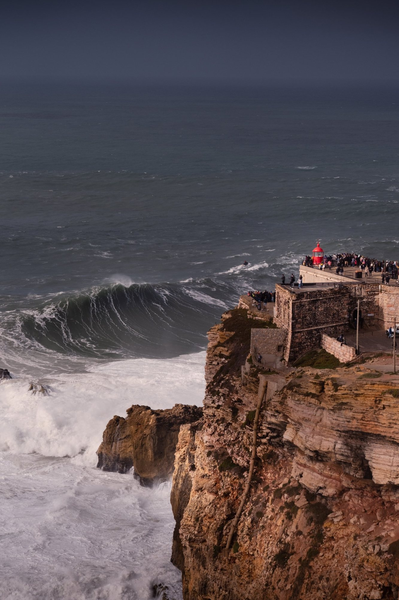

Le longdes côtes
Défiler
01 / 10
Nazaré

02 / 10
Fin de session
03 / 10
La Grande Plage
04 / 10
Le line-up
05 / 10
Ipanema
06 / 10
La côte et la montagne
07 / 10
Le pêcheur

08 / 10
Cavalière au couchant
09 / 10
Le clocher et la mer
10 / 10
Le phare au loin
À propos
Quelques photos à travers ce monde.
gdlcb@gmail.com ↑ Revenir au début © Gaultier Btn